Miki, Kagawa: things to do, food and stays
Miki · Kagawa
Miki
Highlighted on the Kagawa map.
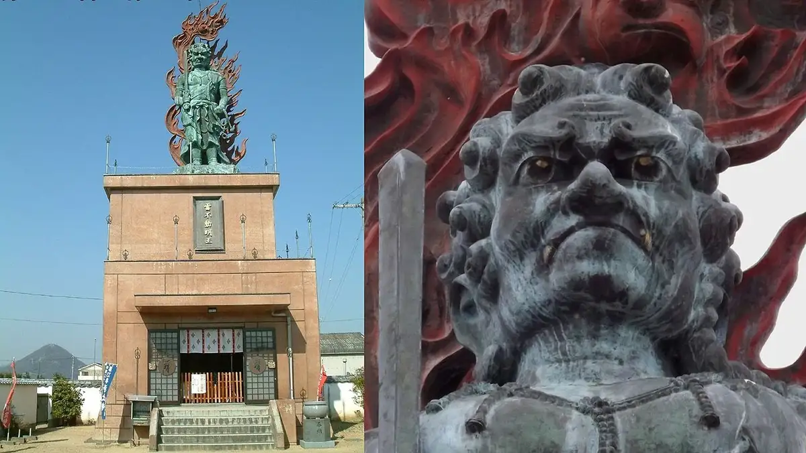
Stay
ＨＯＴＥＬ ＡＺ 香川三木店
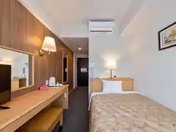
HOTEL AZ Kagawa Miki
Inn in Shikafuku, Miki; 7-minute walk from Gakuentori Station.
【屋島灘温泉 ホテル トレスタ白山】温泉×夕朝食を愉しむ宿
(Ya Shima Nada Onsen Hotel Toresuta Hakusan) Onsen X Yu Choshoku Wo Tanoshi Mu Yado
Hotel at Yashimanada Onsen in Shitatakaoka, Miki with open-air baths and breakfast available.
Miki里山グランピング
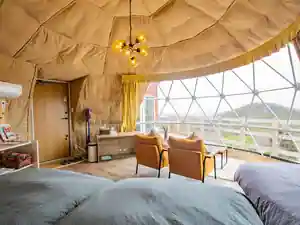
Miki Satoyama Guranpingu
Glamping in Asakura, Miki with a quiet countryside setting.
Dining
滝音
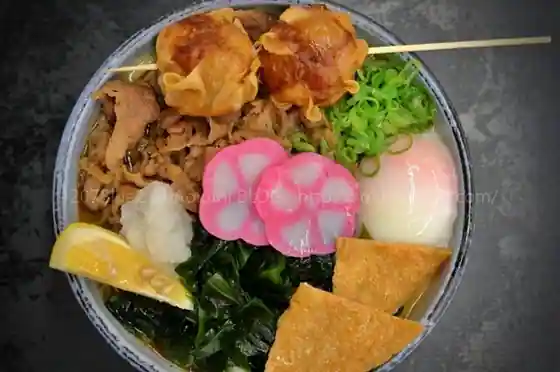
Takioto
多田製麺所
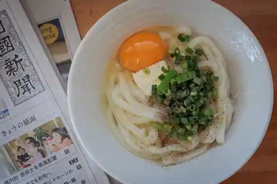
Tada Seimen Tokoro
セルフうどん なりや本店
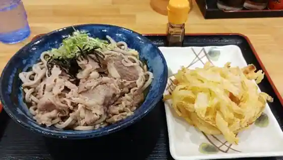
Serufu Udon Nariya Hon
東東亭
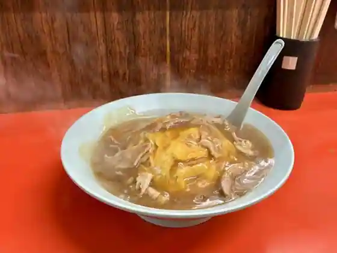
Higashi Higashi Tei
ミキパン avenir amuser
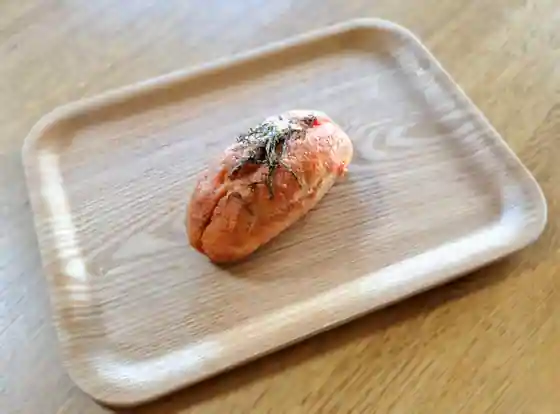
Miki Bakery avenir amuser
味泉
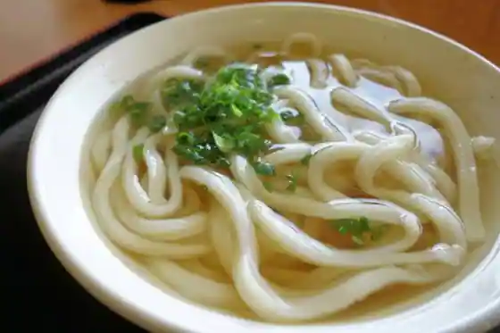
Aji Izumi
森のジェラテリア MUCCA
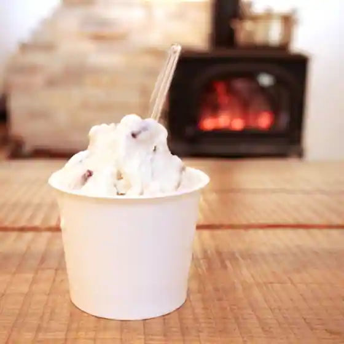
Mori No Jierateria MUCCA
みき
Miki
さぬき親鳥中華そば かしわの木
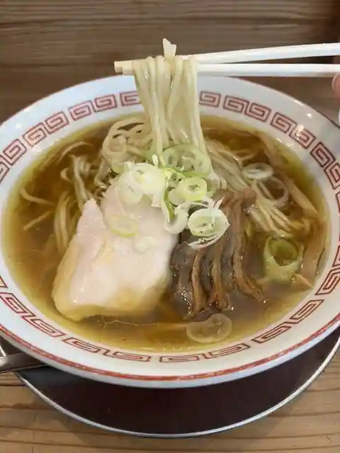
Sanuki Oyadori Chuka Soba Kashiwano Ki
そば屋 福得妙満
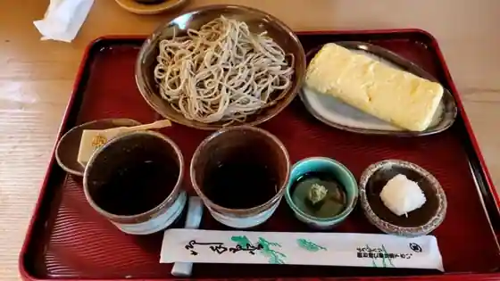
Soba Ya Fuku E Myo Man
たまご専門店 ダンラン
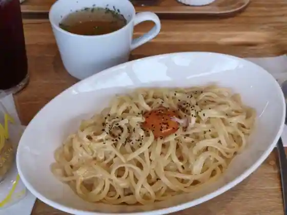
Tamago Senmon Danran
麺喰 三木店
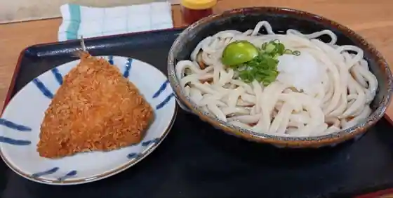
Menkui Miki
美味い魚と旨い酒 がってん
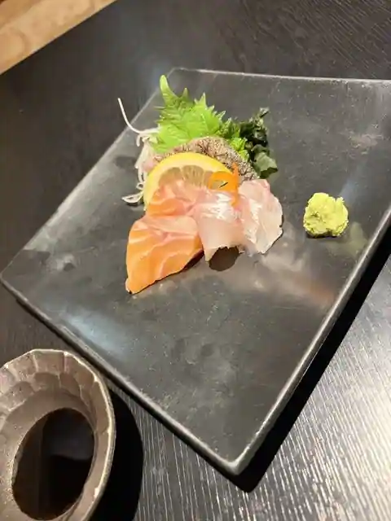
Umai Sakana To Umai Sake Gatten
ザズ プランテ エ カフェ
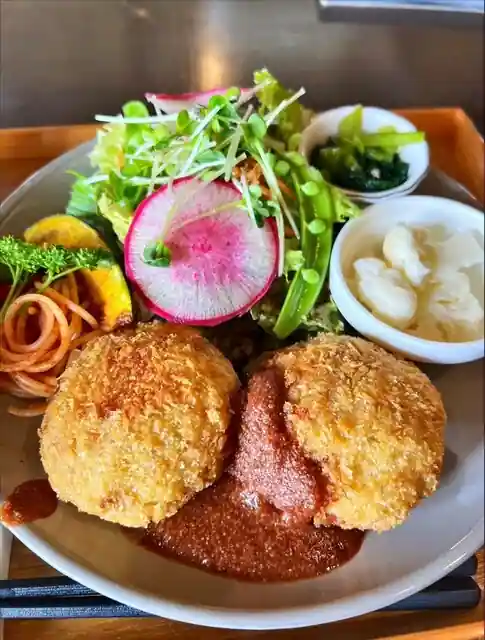
Zazu Purante E Cafe
つくし食堂
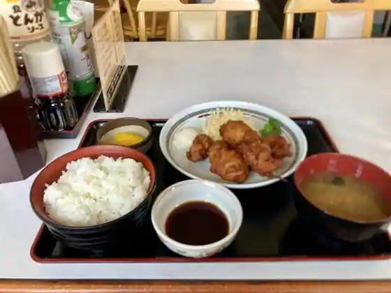
Tsukushi Shokudo
ラーメン庵 福一本陣
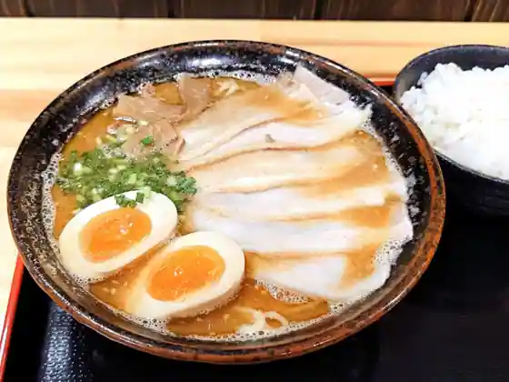
Ramen Iori Fukuichi Honjin
BAKE SHOP GERN 三木本店
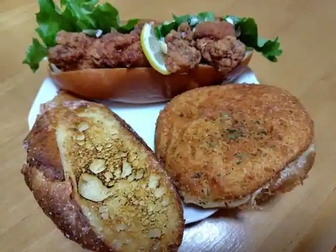
BAKE SHOP GERN Miki Hon
豚太郎 三木店
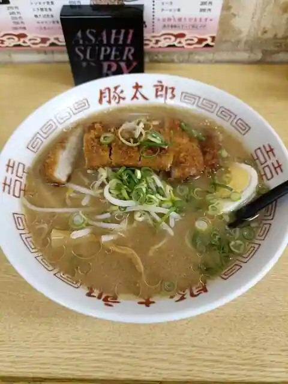
Buta Taro Miki
十河製麺
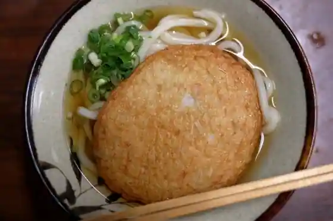
Togo Seimen
茶谷食堂
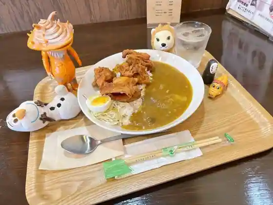
Chatani Shokudo
輪楽
Wa Raku
サンキュー
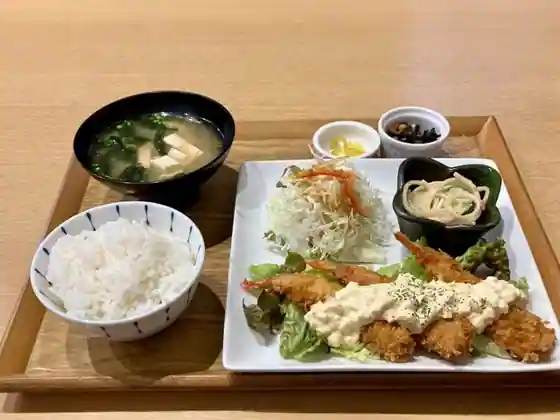
Sankyu
neige
neige
絆
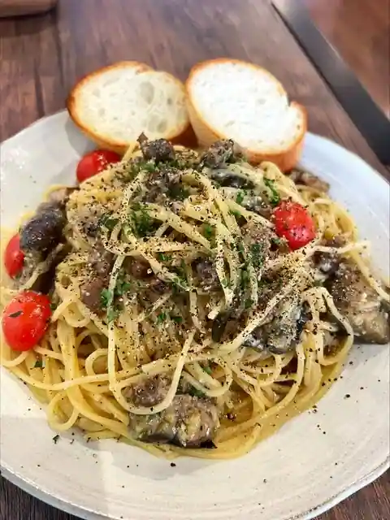
Kizuna
Sights
Jodo Tera
Niji Falls (Odaki)
Niji Falls (Medaki)
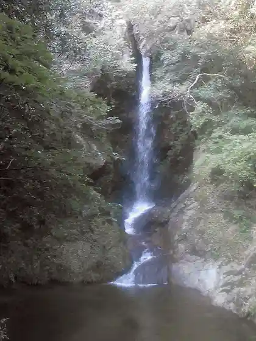
Ko Fuchi Forest Park
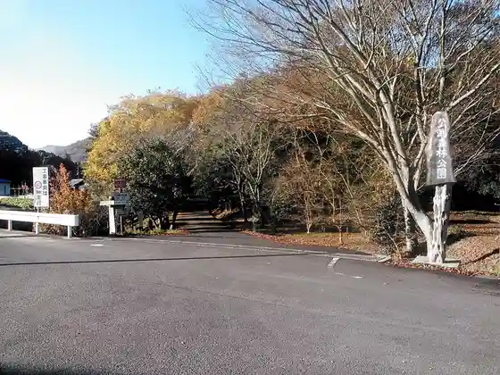
Hakusan Shrine
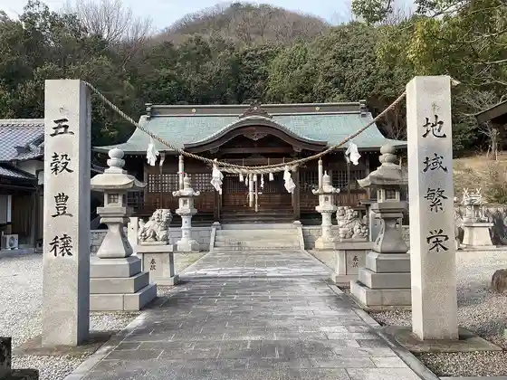
Otoko I Kan Ike
Ikedo Hachiman Shrine
Hakusan